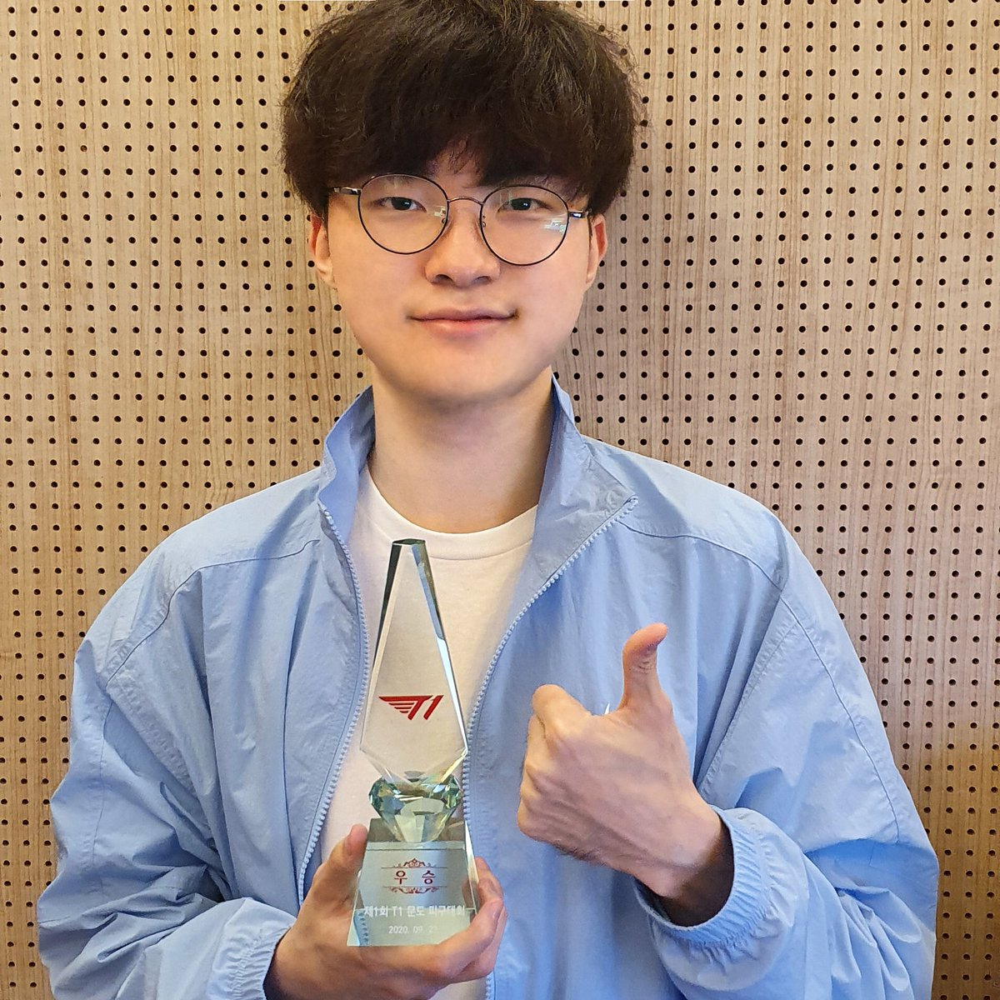

World championship on 2013, 2015 and 2016
Time line of Lee Sang-hyeok's life:
Lee Sang-Hyeok, más conocido como Faker, es un jugador profesional surcoreano de League of Legends. Conocido anteriormente como GoJeonPa en el servidor coreano
Faker es ampliamente considerado como el mejor jugador de League of Legends de la historia desde que demostró sus habilidades en el Mundial de la temporada 3. En octubre de 2013 Faker ganó su primer Campeonato Mundial de League of Legends siendo miembro de SK Telecom T1.
3 Trofeos mundiales, 1 msi, 9 trofeos de LCK